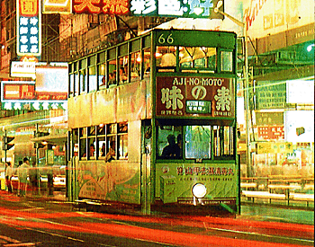
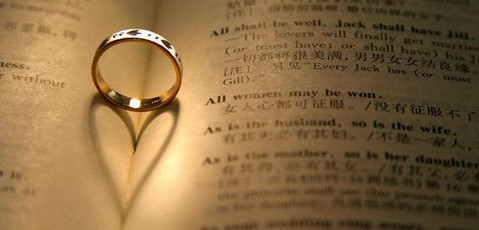
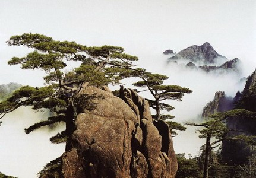

昂首前进！出家的知识青年们！
冯冯
迷失在未来 / 誊录
看到加拿大报纸刊出香港某报转载台北某报的新闻报导，兹抄录如下：（引号内是港报新闻原文）
 “据台北报纸报导：最近有为数不少的大学毕业女生，离开校门未投入社会工作，反而落发为尼，由于这些女大学生行踪不明，引起家人关切。家长在四处查访后，意外地发现：部分寺庙的尼姑中，有相当多人是过去大专院校毕业离家的女子，位于嘉义县一处相当隐密的山上寺庙，据查有六十多名尼姑，大部分是年轻人，而其中三分之二是大专毕业生。
报纸分析大学毕业生削发为尼的原因是：
一、社会发展引起的价值观念的变化。
二、宗教的学术化，促使青年去探讨。
三、社会变化产生的新问题、新困惑，促使青年人对人生意义的新寻求。
四、爱情、婚姻的挫折，而寻求宗教的慰藉与解脱等等。
报纸报导，由于家长们都不愿意此事曝光，因此，究竟有多少女大学生去当尼姑，现下还无法查出较正确的数字，但这一现象已引起校方和学生家长的重视。”
读了上面抄录的新闻报导，引起很多感想：
一、写这篇新闻的人，不可能是佛教徒，大概亦不懂佛教，不明佛理。
二、该文的语气，仍然隐含对佛教出家人尤其是比丘尼的不了解及歧视，出发点仍然是世俗的对佛教出家人的鄙视，该文不称比丘尼或法师而成“尼姑”，这是含有歧视的字眼。
三、世俗的错误观念，认为出家是“遁世”、“逃避社会责任”、“逃避现实”、“寻求宗教慰藉”、“不投入社会工作”。
四、世俗错误的观念认为：知识份子不应出家为僧为尼，年轻人不应出家，都应为个人事业及为名利而奋斗，都应结婚生男育女，只有投入社会的各种职业，才是唯一对社会有贡献。
 五、世俗认为青年人出家，必定是因为受不住爱情或婚姻的打击挫折；世俗认为凡是出家为僧的为尼的，都必是失恋的青年，都是消极悲观的不长进没出息的人。
六、世俗认为青年人因为找不到职业工作，没有出路，才去出家为僧为尼，目的是混饭吃。
纵观该文所提四点分析，第一至第三条，说得还算正确，第四条就不符合大多数出家比丘尼的情形，可能就是基于世俗对佛教出家的不了解而产生的偏见。
不能否认，在历史上确有遁世的人，或是失意的人，以削发为僧为尼，作为逃避现实，也有些混衣食之徒，假借佛门缁衣为生，凡此种种人等，破坏了全体出家人的形象！世人以偏概全，不察真伪，不分正邪，以世俗的功利价值观念，加上学究腐儒的迂见推波助澜，群起歧视佛教出家人。唯物马列主义妄指“宗教是人民的鸦片烟”，直接间接地都影响了对一切宗教的迫害，视出家人为“寄生毒草”，恶意斗争清算各宗教的修行人，这更是记忆犹新的近代历史了。
“一粒老鼠屎，弄臭一锅汤！”过去历史上虽有少数不守戒不行佛心的出家人，像花和尚鲁智深，这位水浒传笔下虚构的酒肉和尚，旧小说胡诌的“妖僧”、“淫僧”……都是文人对佛教恶意诋毁唯恐不及的杜撰。在真实的佛教僧人内，毕竟是绝无仅有的；不幸地，世俗误信了这些谩言，还有迷信观念在作祟，甚至流行为种种对僧尼的恶毒诬蔑，例如什么生意开门见到“和尚”“尼姑”则不吉，得啐吐口水，还得咒骂：“死和尚，臭尼姑！”这种恶毒的迷信心理，至今也还是未能泯除的。
朱子家训不准僧尼入门，以一代大儒尚如此歧视佛教出家人，影响之深远，可想而知，也是往昔少数不良的僧尼破坏僧相的后果！
 就是现代社会，世俗也仍以功利思想为主，对于佛教的大乘入世济度是不了解的。世俗仍然不知道佛教出家人出家修行，是为了入世，是为了济度众生，是为了向社会提供无我的服务，是为了以健康的慈悲平等思想去教化净化社会，出家人所负的积极社会教育责任，是很重大的！出家，是积极的献身与社会道德教育与社会福利工作，并不是逃避现实，入山闭关等等都是先自修作为济世的准备，并非隐避！大专毕业生认清了目标，所以才出家，绝非消极或逃避！能下决心出家献身佛教，毋宁说是有勇气，有抱负的青年！是牺牲小我，和放弃自我功利与婚姻，准备无条件服务社会。
国内越来越多大专学年投入佛教，足见知识青年已经有很多人觉醒了，跳出了功利与欲望的陷阱！这些女青年与男青年使新的一代佛教出家人成为新的高级知识阵容，对于社会与国家的未来贡献，是无可限量的！可以期待得到更加良善康乐的一个社会！化尽人间的戾气！消除世俗的恶业，净化人间！社会需要知识青年出家来推动道德教育与慈善服务！
家有知识份子发宏愿出家弘法济世，正是值得庆贺的喜讯，学校与家长为什么还要以之为忧虑呢？知识青年出家，正像投笔从戎报国一样，是牺牲小我的志行啊！
固然，并不是每一个青年人都应该出家为僧为尼，社会需要多元化的工作者，本文并非主张人人都出家。假如决心不够坚定，又不肯牺牲小我，仍然心存功利，那就还是不出家才好。
古代对于出家是甄选很严格的，玄奘大师等高僧，当年都须经过朝廷考试甄选合格，才获准出家的，并非人人都可以作比丘或比丘尼的！现代知识份子已经过大专教育的甄选，这些英才参加佛教出家行列，是值得庆贺的事，但愿都能坚苦卓绝以弘法及度众生为己任！抬起头来！出家青年们，莫畏惧世俗歧视！
近一年来，收到很不少大专学生来信，其中有些青年女生问应不应出家，又有些女生问：出家的因缘如何？有些说难做决定，有些说父母反对，有些问应在何时何地出家，皈依何人应修何宗派？来信多到无法应付。
这许多问题，都应该由个人自己去思考以作决定的。出家是很庄严的大事，别人不能代着答覆，所以我就是回信，也只能这样回答：“出家是大事，需要由你自己冷静考虑清楚，自己考验心志，自己分析动机与意愿，是不是吃得苦？是不是真为了学佛法自度度人？是否决心献身弘法利众？是否确实可以放弃一切世俗的功利、七情六欲、婚姻、爱情、家庭、事业、物质享受、虚荣……等等？是否真有最大坚决意志？是否能牺牲自己一切的自尊心自我，去以最谦卑最诚恳，百折不挠，赴汤蹈火在所不惜的精神，实践苦行与佛心慈悲布施及服务社会？如果你的答案都是肯定的，那么，你才可以出家，倘若仍有犹豫，倘若仍有世俗眷恋，倘若仍有“我”心，倘若是为遁世，假如是消极，假如只图住到山上寺里清净，假如是为了情场失意，灰心、沮丧、创伤、愤恨等等而去出家，那就不如不出家！“
天主教对于出家做修士或修女，至今仍有很严苛的甄试，并不接受那些一时冲动的出家者，通常都要经过一段很长时间的冷静思考，过去似乎是三年”学僧“或”学尼“阶段，现在听说缩短到一年，“学僧”或“学尼”并不等如真正的受戒僧尼，在修业期间，经过严格的修学与长期冷静思考之后，如果受不了苦，如果放不下世俗情欲功利，仍有自由可以随时退出。
佛教有些道场对于出家也有相似的严格要求，并不是任何人一时冲动，说出家就立予剃度的。有些居士，带发修行于寺庵多年之后，经过长期考验及考虑，师门考察清楚，才准予剃度；不过，也有少数佛教道场，一见面就立予剃度，连羯磨师都不设，连自誓都没有。不能说凡是一时冲动出家的就是道心不坚，但是，出于匆促，总嫌太不够庄严慎重，未经过熟虑的，不少人出家不久就还俗，未经考虑清楚，未弄清楚出家目的，是很难做出家人弘法度众的大事。
出家是很庄严隆重的大事，需要冷静，需要决心与勇气，需要慎重考虑，出家不是为了逃避，更不是为了做自了汉，也不是为了享受清风明月！既为理想出家，就当为这份神圣的使命而感到光荣。昂首前进吧！出家的知识青年们！
网注：多年来，冯冯回应“出家”议题，一再重申以下观点：
“学佛须否出家”面面观 1997年
http://www.geocities.com/slheng/f6.html
拿我自己来说，我是个信佛学佛的人，但我绝不会抛弃我的年迈慈母不予供养照料而跑去出家，我自己觉得我做个在家的学佛人已经很满足，我没有什么弘法利众的大志，也谈不到是孝，佛陀也曾讲过“父母恩重难报经”，并没教人抛弃母亲去出家。至于教人“辞亲割爱”才可出家，我怕是后世弟子的观念，我认为很不合理，很不人道，试想一想，我若出家去了，谁来照料我母亲？我出家去了，让我母亲日夜哭泣思念我？让她无衣无食，无依无靠？倘若我能弘法利众，这样也未免对母亲太残酷了吧？我为什么时候要把我的出家理想建在母亲的痛苦上面？连对自己的母亲都无情，还讲什么修行呢？讲什么对众生慈悲？
学佛必须出家吗？ 2001年
http://www.geocities.com/slheng/b8.html
心存慈悲，多行布施，多行济度，有菩萨愿菩萨行，也就得证菩提，未必一定需要出家！
原载《天华》 第100期：1987年9月1日